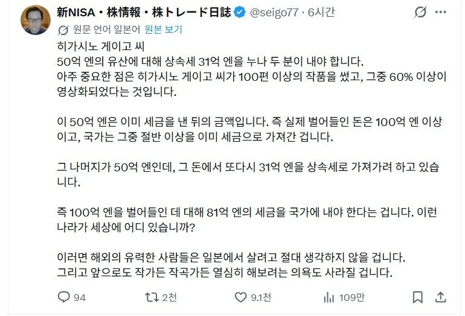

히가시노 게이고가 살면서 벌어들인 소득 100억엔 + α
생전에 낸 세금 추정 50억엔, 사망후 상속자 누나 2명에게
상속자산 50억엔 중 31억엔 상속세 납부 고지서 발송
결과적으로 나라에서 100억엔+α 중 81억엔 가져갈 예정
+ 이중과세는 아닌데 극상위 고소득 세율 장닌아니네

히가시노 게이고가 살면서 벌어들인 소득 100억엔 + α
생전에 낸 세금 추정 50억엔, 사망후 상속자 누나 2명에게
상속자산 50억엔 중 31억엔 상속세 납부 고지서 발송
결과적으로 나라에서 100억엔+α 중 81억엔 가져갈 예정
+ 이중과세는 아닌데 극상위 고소득 세율 장닌아니네
당연한거 아닌가
공짜로 500억 받았는데 왜 세금 안내려는지 이해를 못하겠음
네가 복권 500억 짜리 당첨되었는데 450억 세금 내겠다면 인정
90프로가 상속세란거야?
상속세율은 정하기 나름. 누군가는 90도 괜찮다 누군가는 10도 많다 하겠지.
그래봤자 50억 꽁돈이잖아.
그래 니 말이 맞다
복권이나 상속이나 둘 다 국가입장에선 불로소득이긴 해
그러니까 둘 다 세금 떼고 있는거고.
누나들이 벌면서 세금낸게 아닌데 뭔 이중과세?
뭐 하다하다 몇백 상속받는 외국인 상속세까지 걱정해줘야하냐?
이중과세 이러고 있네
이중과세 뜻도 모르는 사람들이 이중과세 이러고 있네
이중과세는 무슨 ㅋㅋㅋㅋ
이중과세는 아니지 않나?
액수가 크고 세율이 부당해보일순 있어도 이중과세는 절대 아닌데
소득 있는 곳에 세금 있고 소득 없는 곳엔 세금이 일단은 없어야 함. 세금으로 사람을 가난하게 만들지는 않아야 한다라는게 일단은 조세제도의 원칙이라.
그런데 단순히 상속인만 따지면 꽁돈 생긴게 맞는데, 사회전체적으로는 그냥 부의 수평이전임. 어디서 새로운 소득이나 가치가 창출된게 아님.
그야 서로 다른 사람이니까
아무리 가족이라 한들 결국은 타인이잖음 조세법상
그럼 수증자의 이득에 대한 피수증자의 손실을 인정해 줘야지.
우리 아버지가 나에게 500만원을 줘서 나에게 500만원의 소득을 인정할 거면 우리 아버지 는 500만원의 손실을 본 거잖아.
? 먼 상관이야 그게
왜 그게 아버지 손실이야
님 먼 말하는거임?
걍 헛소리하는 거임
쟤 말대로면 가게에서 1000원짜리 과자사면 1000원짜리 과자와 1000원이 맞교환된 거라 그것조차도 부의 수평이전이지 누가 가난해지고 누가 부자가 된 게 아님ㅋㅋ
너무 당당해서 내가 모르는 뭐가 있는 줄 알았음 ㅋㅋ
쟨 아까 종부세글에서 종부세 내면 임대료 이익이 0원이라는 소리도 했음
상속은 사망을 전제로 하는데 아버지가 손실 보셨다고 쳐도 국가가 인정하고 말고 할게 없잖아
얜 아까 종부세로 소설 쓰더니
왜 시발 부가세도 소득세 냈는데 또 뜯어간다고 이중과세라고 하지? ㅋㅋㅋㅋㅋㅋㅋㅋㅋㅋㅋ
그게 아빠 돈이지 니 돈이야?
중국 가서 살아야 할 사람들이 왜 한국이나 일본에서 살아서 이렇게 힘들게 사나 ㅋㅋㅋㅋ
상속재산 50억엔 중 비인기부동산 비중 높으면 저거 마이너스 날수도 있겠다
진짜로 그런 경우가 생김
그래서 시골에 버려진 집 많음
왜캐 다들 중간이 없냐;;
세금얘기나오니까 발작들 많이하네ㅋㅋ
해외는 상속세 없다고 선동하는 사람들 있는데, 다른 방식으로 세금을 걷는다는건 쏙 뺴놓고들 이야기함.
예를 들어 부동산 같은 경우에,
캐나다 -> '상속세' 는 없는데 사망시에 자산을 판매한거로 환산해서 가치 상승분에 양도소득세를 매겨서 떼감. 일종의 미실현이익에 대한 과세
호주 -> '상속세' 는 없는데 구매시점 취득가액을 같이 물려줌. 상속받은 사람이 그거 처분할때는 상속받은 취득가액부터 상승한 차액 전체에 대해 양도세 붙음
스웨덴 -> 호주랑 비슷
포르투갈 -> '상속세' 는 없는데 유산 받은걸 증여로 보고 취득세를 떼감
물론 상속세율이나 적용 방법, 공제 범위에 대해서 적절성을 이야기할 수는 있는데 '자산 처분은 개인의 자유' 라는 거 하나로 상속세를 부정하기엔 아직 많은 나라들이 '물려주는 자산에 대한 세금'을 매기는걸 시스템의 정당한 기능으로 인정하고 있음.
그럼 집 사고 팔때 세금내면 그것도 이중과세아님?
논리가 참...
말이 존나 이상하네 생전 소득 100억엔에 대한 세금 50억엔 = 고소득자일수록 세율 높으니 거의 반 가져가는거 한국이나 일본이나 비슷(사실 일본이 더 때감)
실수령 50억엔에 대한 상속세 약60% 끝
생전 소득세를 상속자가 냈냐
본인이랑 상속자는 별개지 어떻게 저걸 80% 때간다 생각하지
게이고 : 아니 씨발 난 죽어서 별 관심도 없는데 딴놈들이 난리네
그냥 별도의 사업에 대해서 세금매긴건데 뭔소리야
유산취득세로 전환하는게 맞다고는 생각
상속 증여는 받을거 없는 거지들이 더 많아서 여론 좋기 힘듬. 근데 말도 안되는 만큼 떼가긴해.
부모님이 10억만 있어도 장난 아녀
내가 자식한테 돈준다 하거나 부모님이 자식한테 주는 것고 다떼는데
소득세는 게이게이코가 낸거고 상속세는 받는 게이게이가 내는거니까 이중과세는 아님 다른나라도 다 똑같고
근데 존나 많긴하네
그래서 태어나자 마자 증여세 절약 작업을 치는거임
한편 소득세 부담 후 상속세를 내는 것이 ‘이중과세’라는 주장도 있습니다만 진지하게 받아들이기는 어렵습니다. 일단 납세의무자부터 다르니까요. 결국 부모가 자기 소득에 세금을 냈다고 자식이 노력 없이 얻은 재산에 세금을 안 내도 된다는 것인데, 정당화되기 힘든 논리입니다.
https://www.lawtimes.co.kr/news/articleViewAmp.html?idxno=206310
윤지현 교수(서울대 로스쿨)
마 니 게이고